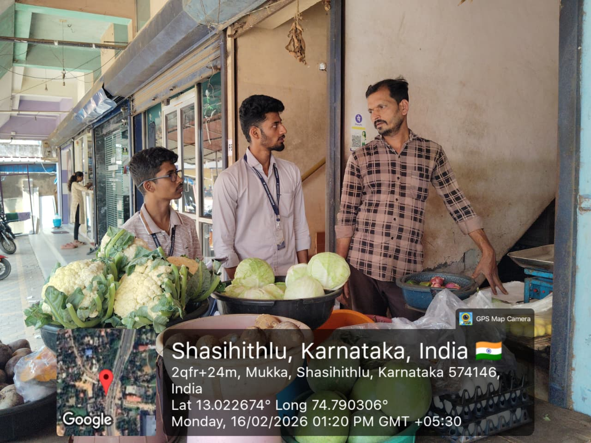
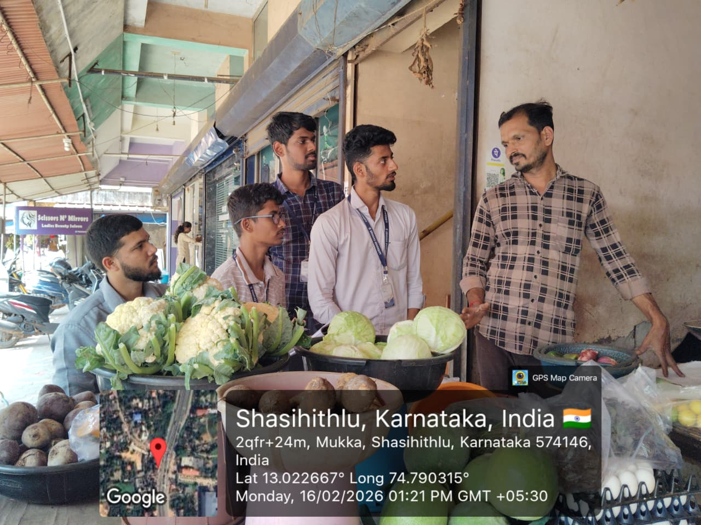

A "No Middleman" Case Study
Takes 100% Risk
Gets 10% Value
"The Poisonous Cycle"
Takes 0% Risk
Takes 90% Value
Controls the Market
Wilted Produce (5-7 days old)
High Markup Cost
"Why pay more for less?"
Survey findings from local markets — exposing the middleman's grip

Survey Response #1

Survey Response #2
Warm, wilted capsicum — a sign of poor cold-chain & delayed supply
Capsicum Sample #1
Capsicum Sample #2
Farmer sells @ ₹5
Consumer pays @ ₹40
Loss & Waste
Farmer lists @ ₹25
Consumer pays @ ₹25 (+del)
Profit & Freshness
Ramesh • Mysuru
(Mock Product Card)
Connecting the nodes directly.
// Backend Logic: Direct Connection
const createOrder = async (consumerId, product) => {
// Direct Payment Routing
const payment = await processPayment({
from: consumerId,
to: product.farmer._id, // Money goes to Farmer
amount: product.price // Full Amount
});
return new Order({ consumer, farmer, items: [product] });
};
Debt-Free Farmers
Healthy Families
Sustainable Future
"The shortest distance between the earth and the plate."
Created with ❤️ for the Farmers of India